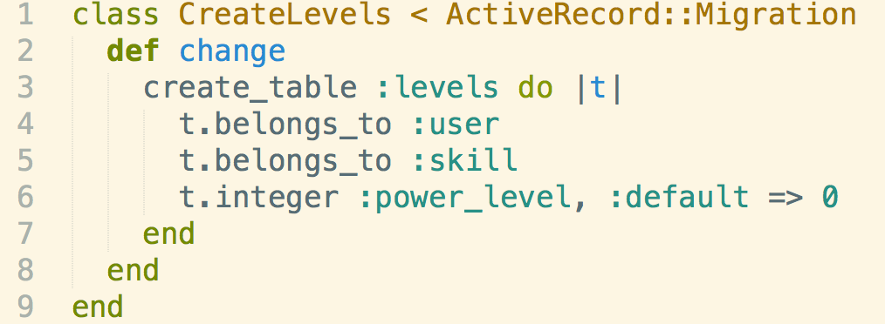
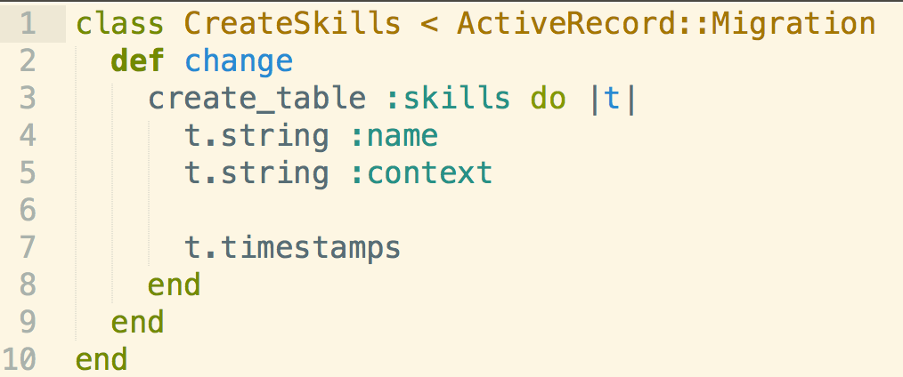
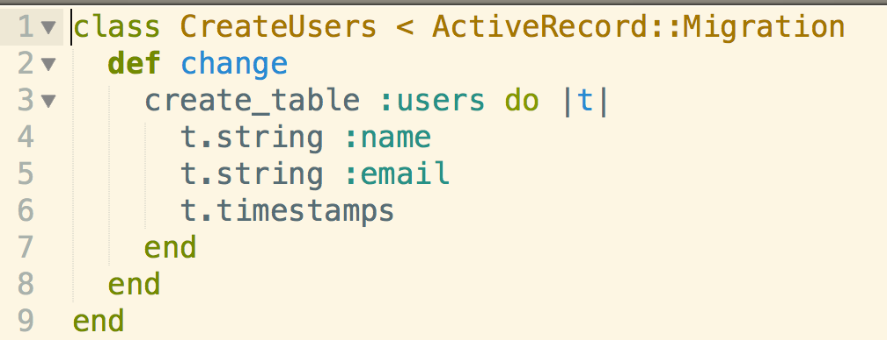
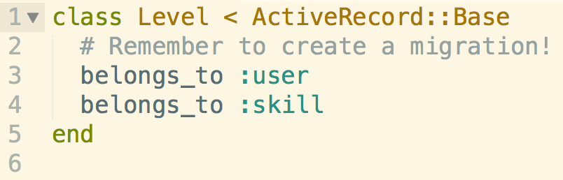
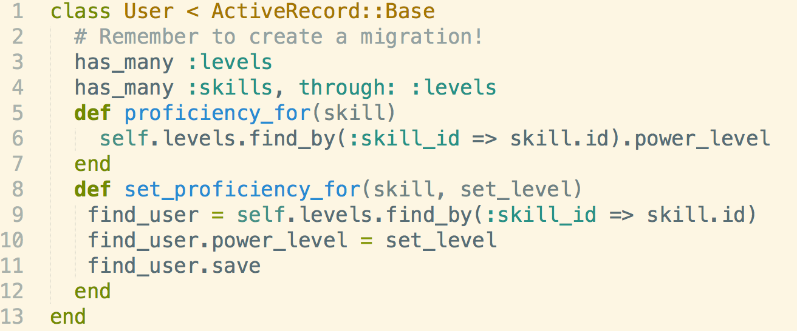
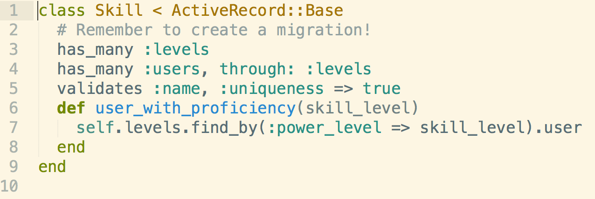

Resources:
RubyonRails APIBackground
In phase 2 of DevBootCamp, we are required to do a series of 10 solo portfolio challenges. One of the challenges requires us to do a join table in AR as well as some other things. Let's take a look at the files below.
This post will be a review of Associations, Validations, and Join tables in AR.
Workflow
- Use rake commands (generate, db, seed) to create migration and model files.
- Create the schemas of the migration files. This is part 1 of where you set up the joins. The first image below is your joins migraion, the ones after are the other migrations.   
- Create the Associations and Validations in your models. The first image below is the joins model. Notice how we have two belongs_to associations. The other following images link to the joins table(has_many :levels) and link through the joins table to the other model.   